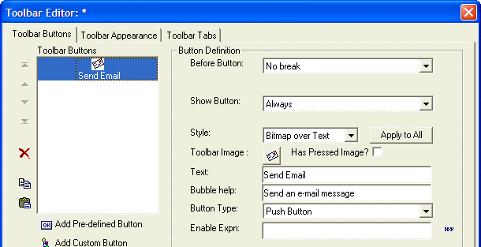
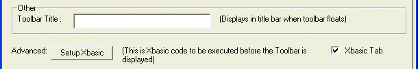
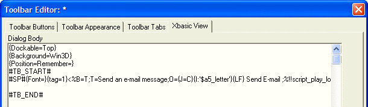

Creating Buttons the Easy Way
The Alpha Anywhere Toolbar designer provides an easy way to create Xdialog buttons without having to remember any syntax.
To use the "easy way out", create a new, blank, toolbar. Put a "Custom Button" on the toolbar. Select the button image and style (e.g. bitmap only, or text only, or text and bitmap). Specify the button text (if button style includes text) and the bubble-help.

Next, click the "Toolbar Appearance" tab and check the "Xbasic Tab" check box.

Next, select the "Xbasic View" tab:

Finally, copy the Xdialog code for the button:
<%B=T;T=Send an email message;O={J=C}{I:'$a5_letter'}{LF} Send Email ;%!!script_play_local("")> |
You will need to make some modifications to this code because you will want to specify your own event name:
<%B=T;T=Send an email message;O={J=C}{I:'$a5_letter'}{LF} Send Email!event_name> |
Next
Dynamically Changing the Bitmap on a Button
Limitations
Desktop applications only.